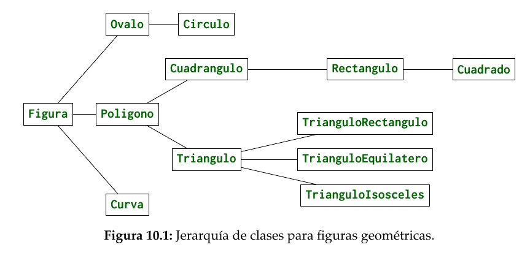

Table of Contents
1. Herencia
Por más que no queramos aceptarlo, nosotros no somos dueños de nuestro código. Más del 90% de código es código reutilizado de otros programadores con licencia GNU. Incluso un mismo programador debe de reutilizar su propio código porque embeces se vuelve engorroso copiar/pegar el mismo código pero con alguna pequeña modificación.
En 1987, Bárbara Liskov definió lo que hoy se conoce como herencia en lenguajes de programación que básicamente es Si un programa B hereda de un programa A, B debe funcionar igual que A sin modificar el código
La programación orientada a objetos requiere que se pueda heredar comportamiento que junto con la encapsulación crean la base para este paradigma de programación. La herencia es similar a la herencia natural. Tenemos características similares y poco diferentes a nuestros padres. En el caso de programación, podemos tener una clase padre del cual derivan características y atributos a las clases hijas o subclases, con la ventaja de definir nuevos atributos y métodos aparte de los ya heredados.
Todo esto es muy téorico, crearemos un ejemplo sencillo. Queremos crear un zoológico, donde habrán diferentes tipos de animales; usaremos la siguiente tabla para no tener datos aleatorios.
| Nombre | Bioma | Vegetacion Favorita | Costo | Lugar de origen |
|---|---|---|---|---|
| Beluga | Acuático | Kelp | $850 | Oceanos árticos |
| Narval | Acuático | Lechuga de mar | $1,200 | Oceanos árticos |
| Orca | Acuático | Hierba marina | $2,500 | Todos los oceanos |
| Oso Grizzly | Bosque de coníferas | Cedro amarillo | 1,000 | Norteamérica |
| Tigre siberiano | Bosque de coníferas | Ficus chino | $1,000 | Siberia |
| Alce | Bosque de hoja caduca | Sauce llorón | $700 | Norteamérica |
| Oso negro | Bosque de hoja caduca | Álamo temblón | $850 | Norteamérica |
| Órix | Desierto | Arbusto espinoso | $900 | Africa |
| Bisonte Americano | Pradera | Planifolio | $1,500 | Norteamérica |
| Avesturz | Sabana | Hierba alta | $1,100 | Africa |
| Elefante Africano | Sabana | Baobao | $2,500 | Africa |
| Jirafa | Sabana | Acacia de copa plana | $1,600 | Africa |
| León | Sabana | Acacia de copa plana | $700 | Africa |
| Gorila | Selva tropical | Oreja de elefante | $2,500 | Africa |
| Tigre de bengala | Selva tropical | Mangle | $1,500 | India |
| Panda gigante | Tierras altas | Bamboo | $5,000 | China |
| Puma | Tierras altas | Arbusto sage | $700 | Norteamérica |
| Oso polar | Tundra | Cueva de rocas nevadas | $1,500 | Artico |
| Pinguino emperador | Tundra | Cueva de hielo | $1,100 | Antartida |
Observamos que, todas las especies comparten atributos en común; las columnas. Podemos definir una superclase con estos atributos y métodos para todos los animales para que cada subclase los herede, tipo:

La superclase abstrae a un nivel superior las subclases, con la
principal ventaja que es, en lugar de copiar y pegar los atributos y
métodos 1 x 1 a cada subclase, Java lo hace de manera automática,
solo hay que usar la cláusula extends
Básicamente podemos crear una superclase de un objeto sustituyendo la frase es un entre la sublcase y superclase; en este caso, un Pinguino es un Animal, un Elefante es un Animal. De hecho, podemos abstraer a un nivel medio entre las clases, por ejemplo: Beluga es un Animal Marino, que a su vez es un Animal.

Cada nivel en la jerarquía de clases, hacia abajo va aterrizando a algo más fijo la clase, mientras que hacia arriba va abstrayendo a algo más general la clase. Es claro que todas las subclases tienen el mismo comportamiento que sus superclases, heredando por nivel. No existe un método de cómo clasificar nuestros objetos, y de hecho no es una tarea trivial; sin embargo la práctica hace lo suyo.
Veamos ahora la implementación en Java, queremos reutilizar cosas
así que conviene escribir bien una sola vez y luego solo
copiar-pegar usando extends. Por motivos de longitud de texto,
solo se hará el subarbol izquiero
/* Animal.java */ public abstract class Animal { private String nombre; private int edad; private String bioma; private String vegetacion; private int costo; private String origen; public Animal(String nombre, int edad, String bioma, String vegetacion, int costo, String origen){ this.nombre = nombre; this.edad = edad; this.bioma = bioma; this.vegetacion = vegetacion; this.costo = costo; this.origen = origen; } public abstract void sonido(); public void dormir(){ edad++; System.out.println("Durmiendo... zZz"); } @Override public String toString(){ String s = "Soy un " + this.getClass().getSimpleName() + "!"; return s; } }
/* Terrestre.java */ public abstract class Terrestre extends Animal { private boolean esCarnivoro; public Terrestre(String nombre, int edad, String bioma, String vegetacion, int costo, String origen, boolean esCarnivoro){ super(nombre, edad, bioma, vegetacion, costo, origen); this.esCarnivoro = esCarnivoro; } public void caminar(){ System.out.println("Estoy caminando!"); } }
/* Elefante.java */ public class Elefante extends Terrestre { @Override public void sonido(){ // Un berrido System.out.println("Brrrrffff!"); } @Override public void caminar(){ System.out.println("Camino a 2 km/h"); } }
/* Panda.java */ public class Panda extends Terrestre { @Override public void sonido(){ System.out.println("Mnnneee heheheheh"); // https://www.youtube.com/watch?v=8yqqanhjJuc // ES dificil escribir la onomatopeya } @Override public void caminar(){ System.out.println("Doy rodadas de pandita"); } @Override public void dormir(){ edad -=2; System.out.println("zzzZZZZzzz"); }
Y finalmente el Main.
public class Main { public static void main (String[] args){ Elefante e = new Elefante("Dumbo", 23, "Sabana", "Baobao", 2500, "África", false); Panda p = new Panda("Joaquín", 12, "Tierras altas", "Bambú", 5000, "China", false); System.out.println(e.toString()); e.caminar(); e.sonido(); e.dormir(); System.out.println(); System.out.println(e.toString()); p.caminar(); p.sonido(); p.dormir(); } }
Salida
"Soy un Elefante!" "Camino a 2 km/h" "Brrrrffff!" "Durmiendo... zZz" "" "Soy un Panda!" "Doy rodadas de pandita" "Mnnneee heheheheh" "zzzZZZZzzz"
Este ejemplo contiene varios conceptos clave de la herencia que son bastante utilizados en Java, analizaremos el código a detalle.
1.1. Clases y métodos abstractos
Lo primero que notamos es que tenemos la cláusula abstract en la
firma de la clase Animal.
public abstract class Animal {
Una clase abstracta significa que no puede instanciar objetos de ninguna forma ya que es abstracto y no existe en la vida real, lo cual es bastante lógico ya que no existe un animal que se llame Animal, sino que este es un grupo que hemos creado mentalmente.
La siguiente línea truena como ejote:
Animal a = new Animal();
Además, más abajo tenemos el método abstracto sonido(). Es abstracto
porque sabemos que todos los animales (o bueno la mayoría) emiten un
sonido, PERO no podemos implementar el código ya que necesitamos
saber el animal para escribir su sonido; por esta razón es
abstracto. En lugar de tener cuerpo {}, se define como una
variable, terminando en ;
public abstract void sonido();
Es claro que una clase instanciada debe tener listos todos sus métodos
para ejecutar, en el imposible caso que se pudiera crear al animal, y
quisieramos ejecutar el método sonido() tronaría 2 veces como ejote
porque no hay código para ejecutar.
Animal a = new Animal(); a.sonido() // ????
Por otro lado, tenemos un método no abstracto común y corriente que cada vez que duerme el animal se le va un año de vida. Este método pasará a todas las clases igualito a menos que lo sobrecarguemos.
public void dormir(){ edad++; System.out.println("Durmiendo... zZz"); }
Una clase abstracta puede tener métodos abstractos y un método abstracto debe estar en una clase abstracta, pero también puede no tenerlos los cuales se heredan a sus subclases. De hecho, no existe una clase abstracta que no tenga subclases, no tiene sentido ya que no se pueden implementar.
Luego siguen las variables de clase, atributos que compartirán todas las subclases que hereden de Animal.
private String nombre; private int edad; private String bioma; private String vegetacion; private int costo; private String origen;
Los getters y setters se omiten por cuestión de espacio.
1.2. super vs this
Esta parte tiene que ver con Constructores. Tenemos un constructor general el cual inicializa el valor de las variables.
public Animal(String nombre, int edad, String bioma, String vegetacion, int costo, String origen){ this.nombre = nombre; this.edad = edad; this.bioma = bioma; this.vegetacion = vegetacion; this.costo = costo; this.origen = origen; }
Es un constructor un poco grande, pero no hay otra manera de rellenar una fila de la tabla si no es 1 x 1, o generados aleatoriamente.
En la subclase Terrestre.java, también tenemos un constructor, que
añade la variable de clase esCarnivoro que es una particularidad de
los animales terrestres (igual no tuve mucha imaginación).
Literalmente es como si tuvieramos las variables de la superclase
copiadas y pegadas dentro de esta clase invisibles, las podemos
usar como si de verdad estuvieran ahí! Justo la palabra extends hace
esto posible. Para los métodos es exactamente lo mismo.
/* Tenemos estas variables ocultas automáticamente! */ // private String nombre; // private int edad; // private String bioma; // private String vegetacion; // private int costo; // private String origen; private boolean esCarnivoro; public Terrestre(String nombre, int edad, String bioma, String vegetacion, int costo, String origen, boolean esCarnivoro){ super(nombre, edad, bioma, vegetacion, costo, origen); this.esCarnivoro = esCarnivoro; }
Notamos que el constructor de Terrestre es todavía más largo porque también debe inicializar todas esas variables.
public Terrestre(String nombre, int edad, String bioma, String vegetacion, int costo, String origen, boolean esCarnivoro){
Es claro que si queremos construir a un animal terrestre que tenga
además el atributo esCarnivoro, debemos también inicializar los
atributos como nombre, edad etc. En Java esto es lo primero que
debe pasar, inicializar los atributos de sus superclases. Esto lo
logramos con super(); básicamente estamos llamando al constructor
padre ya que no podemos llamarlo normal.
super(nombre, edad, bioma, vegetacion, costo, origen); // No jala en java. // Animal(nombre, edad, bioma, vegatcion, costo, origen); // Siguientes asignaciones. this.esCarnivoro = esCarnivoro;
Por otra parte, this se utiliza para llamar constructores hermanos
dentro de la misma clase, al igual que super() debe ser lo primero
que mande a llamar. Ojo que solo estamos usando métodos estáticos y
valores fijos.
/* Constructor de animal aleatorio, solo recibe nombre */ public Terrestre(String nombre){ // Llama al constructor que recibe todos los parámetros this(nombre, (int)(Math.random() * 50), Bioma.aleatorio(), Vegetacion.aleatoria(), (int)(Math.random() * 6000), Bioma.origen(), true); }
Finalmente tenemos los métodos de clase Animal que serán heredado a
todas las demás subclases que extiendan a Animal. El hecho de que
el método sonido() sea abstracto, significa que debemos
implementarlo en alguna subclase; si no lo implementamos nunca no
compilará nuestro objeto. Es como tenerlo en stand by.
public abstract void sonido(); public void dormir(){ edad++; System.out.println("Durmiendo... zZz"); } @Override public String toString(){ String s = "Soy un " + this.getClass().getSimpleName() + "!"; return s; }
El otro método dormir() sí está implementado, y no es necesario
reimplementarlo en subclases, si queremos tener funcionalidad de la
clase padre.
toString() es un caso de Object que veremos más adelante.
1.3. Object
Object, como su nombre indica, es un Objeto padre de todos los objetos. Cualquier clase que exista en Java (sí, incluso las que creamos) heredan de Object. La documentación de Java indica que todos los objetos implementan los métodos.
- clone()
- equals(Object obj)
- finalize()
- getClass()
- hashCode()
- notify()
- notifyAll()
- toString()
- wait()
por cuanto Animal hereda de Object, podemos sobrecargar
utilizando la anotación @Override el método toString(); de hecho
utilizamos también el método de getClass() y aunque nunca lo hayamos
definido, siempre está disponible.
@Override public String toString(){ String s = "Soy un " + this.getClass().getSimpleName() + "!"; return s; }
El funcionamiento de getClass().getSimpleName() es simplemente tomar
el objeto en memoria el objeto Animal@4ef41afc y obtener su nombre
en String. De nuevo, this hace referencia a este objeto desde
dentro del objeto.
La biblioteca estándar de java con más de 100,000 clases utiliza la
herencia para reutilizar código, por ejemplo del paquete java.io que
solo se dedica a leer y escribir su árbol jerárquico es como

En conclusión, la herencia es una de las herramientas más poderosas
de la programación orientada a objetos, entenderlo es simple: copiar
y pegar código del padre al hijo utilizando extends.
Sin embargo, saber cuándo utilizar herencia (y cómo plantear el arbol jerárquico) no es una tarea trivial, y es una habilidad que solamente se aprende programando mucho; muchos programadores fallan en usar mal este poder resultado en sistemas defectuosos.
Por eso siempre antes de extender o abstraer una clase debemos pensar en Bárbara Liskov, ¿se cumple que todo el funcionamiento del padre pasa al hijo? y no solo para nuestros programas en este momento; más importante a futuro.
1.4. Problema 1: Operacion
Se necesita implementar una clase que resuelva operaciones
binarias. Operaciones como suma(), multiplicacion(), resta(),
division(), exponenciacion() deben realizarse con el método
operar() el cual regresará el resultado de la operación. La relación
de herencia es la siguiente.

En una clase Main deberás probar cada una de las operaciones, creando el objeto de su operación por ejemplo:
Resta resta1 = new Resta(valor1, valor2); System.out.printf("%i - %i = %f", valor1, valor2, resta1.operar());
1.5. Problema 2: Personas
Crear una clase Persona que tenga como atributos el nombre y la
edad, siguiendo las mejores prácticas de programación.
Plantear una segunda clase que sea Empleado que añada el atributo
sueldo y el método cobrar()
Plantear una tercera clase que sea Director que añada el atributo
puesto y el método viajar()
Finalmente una cuarta clase que sea Cliente que añada el atributo
presupuesto y el método gastar().
Todas las clases deben de estar relacionadas. No necesitas idear un algoritmo para poder cobrar, solamente imprime un mensaje de lo que hace ese método. En la clase Main deberás llamar a todos los métodos de cada objeto.
1.6. Problema 3: Figura.
Un programa de dibujo para niños (TuxPaint) requiere de construir figuras a través de un lienzo. Existen varios tipos de figura

Todas las figuras, al ser en 2D podemos sacarle su area() y
perímetro(); sin embargo, no todas las áreas se calculan igual así
como tampoco todos las figuras ocupan los mismos parámetros para su
construcción. Por ejemplo, Círculo solo ocupamos su radio, mientras
que el Triángulo ocupamos el tamaño de sus 3 lados.
Crea la jerarquía de clases utilizando herencia como lo muestra el dibujo.